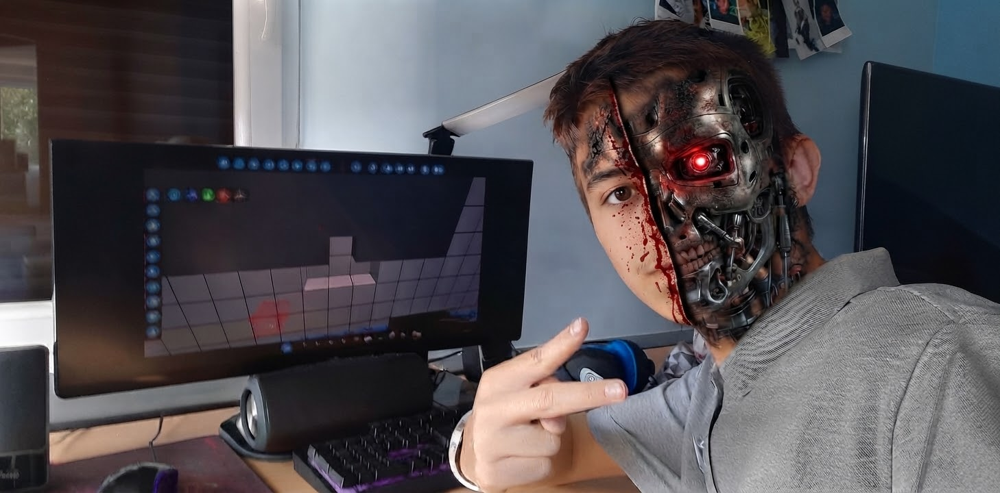
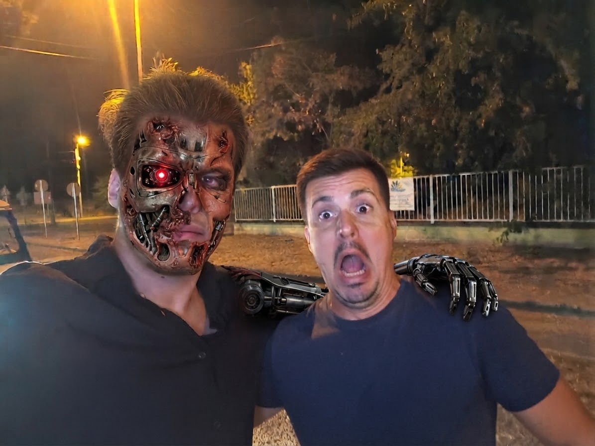

A mi csapatunk jelenleg nincs jelen. A cégünket és alkalmazottait körülbelül 25 év múlva fogják megtervezni.
Viszont visszaküldtünk 2008-ba 2 hírvivőt, akik már nem képesek az embergyilkolásra (mivel véletlenül vizet ittak 😒) (elég gyenge prototípusok).
Természetesen mi szebbek és okosabbak vagyunk. Hogy a múlt embereinek megnyerőbb legyen a kinézetük, álcával láttuk el őket.
A hírvivők nem "jelmezt" viselnek, hanem egy speciális, élő, növesztett szövetréteg borítja a fémvázat, amely vérzik, öregszik (vagy legalábbis képes sebződni),
és tapintásra is olyan, mint egy igazi ember.
Ezt az oldalt is ők csinálták (hát olyan is).

Egyértelműen a csapat esze. Ő egy újabb modell, a T1500-as.
Ő csinálta az oldalon a CRT-dizájnt, az alapvető kinézetet, illetve az utalási lehetőséget.
Mivel emberfiziológiára tervezték, így ő volt a tökéletes modell erre a feladatra. A programozási
képességei egyértelműen felülmúlják az idejében élő minden más élőlényét. A kódjába a
milliomos programozó karrier van betáplálva, ami felé kevesebb sikerrel halad. A Szervezethez hűséges.
Részt vett a "0001110101011101000 0110100011100" hadműveletben, ahol elősegítette az alacsonyabb életformák bukását.

A sokak által csak Nyiki modellnek nevezett G55-ös egység kevésbé okos, de sokkal szebb. Ez az egység sokkal kreatívabb, szinte másodpercek alatt tud egy leleplezhetetlen fedősztorit kitalálni. Így az ilyen modelleknek nagy hasznát tudtuk venni a perek korában. Őt azért küldtük vissza, mivel ő találta ki a fedőcég sztoriját. Egyetlen probléma vele, hogy nincs benne hiba, illetve hogy túl szép. Döntő szerepet játszott az alacsonyabb életformák gazdasági meggyengítésében. A szervezethez hűséges.